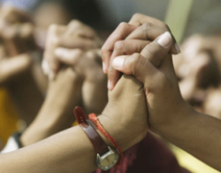

پذيرش > اخبار > دیدبان زنان: زنان و مقابله با جنگافروزی


 دیدبان زنان: زنان و مقابله با جنگافروزی دیدبان زنان: زنان و مقابله با جنگافروزی
28 اسفند 1391 - - نسخه قابل چاپ
رادیو زمانه: در هفته گذشته برگزاری برنامههای بزرگداشت هشتم مارس، روز جهانی زنان همچنان ادامه داشت و شمار زیادی از گروههای سیاسی و مدنی به این مناسبت بیانیه صادر کردند.
از سوی دیگر لایحه حمایت از خانواده سرانجام پس از شش سال به تائید شورای نگهبان رسید و تصمیمگیری درباره بیمه زنان خانهدار به سال آینده موکول شد. سخنان رئیس مرکز امور زنان و خانواده درباره آمار خشونت علیه زنان در ایران از دیگر خبرهای حوزه زنان در این روزها بود.
روز جهانی زن از زندان اوین تا مالموی سوئد
روز جهانی زنان در حالی پشت سر گذاشته شد که با وجود همه محدودیتها و فشارهای اعمال شده بر فعالان حقوق زنان در ایران، این روز در داخل ایران به سکوت برگزار نشد.
در رشت، مراسم گرامیداشت روز جهانی زن در روز ۱۸ اسفندماه (هشتم مارس) در خانه شخصی یکی از فعالان برگزار شد. در این مراسم "گروه زنان روشنک" که به تازگی راهاندازی شده است، گزارشی از فعالیت خود را ارائه کرد و طی یک سخنرانی و پرسش و پاسخ، به موضوع "نقد فمینیستی بازنمایی زن در تصاویر" پرداخته شد. همچنین صدها دفترچه حاوی مقالاتی مختلف درباره زنان در سطح شهر رشت توزیع شد.
این مراسم واکنش برخی رسانههای نزدیک به محافظهکاران را برانگیخته است. وبسایت عصر امروز با اعتراض به برگزاری این برنامه از آن به عنوان "هتک حرمت ارزشهای اسلامی توسط عده اندکی در رشت" یاد کرده و خواهان پیگیری "سریع و قاطع" مسئولان قضائی به عنوان مدعیالعموم شده است.
از سوی دیگر شماری از فعالان حقوق زنان در یک اقدام جمعی با صدور بیانیهای به بررسی "بیمها و امیدهای زنان ایران در آستانه روز جهانی زن سال ۱۳۹۱" پرداخته و آوردهاند: "بسیاری از فعالان حقوق برابر مصرانه تلاش دارند تا روزنه های امیدبخش موجود را به فرصت هایی واقعی تبدیل کنند و در شرایط ناپایدار سیاسی برحذر از تهدیدها، به سمت پایداری و استقلال فعالیت های جنبشی حرکت کنند. "
سه وبسایت "تغییر برای برابری"، "کانون زنان ایرانی" و "تا تغییر قوانین برابر" نیز با انتشار یک ویژهنامه مشترک، بر وضعیت اشتغال زنان و سیاستهای جدید دولت در این زمینه پرداختهاند.
مهمترین برنامه هشت مارس امسال اما در بند زنان زندان اوین برگزار شد. زندانیان سیاسی زندان اوین در یک برنامه مفصل به بررسی موضوعاتی همچون "تاریخچه هشت مارس"، "زنان و قوانین"، "کمپین یک میلیون امضا"، "تجربه مادری در زندان" و "زنان و مدیریت" پرداختند. شیوا نظرآهاری، شبنم مددزاده، ژیلا بنییعقوب، نسرین ستوده، فائزه هاشمی، کبری بنازاده و حکیمه شکری زندانیان سیاسی بودند که در این مراسم سخنرانی کردند. این مراسم که پوستر آن برگرفته از طرح جلد کتاب "جنس دوم"، سیمون دوبوار بود، با خواندن دستجمعی سرود "ای زن، ای حضور زندگی" پایان یافت.
علاوه بر این فعالان زنی که در سالهای اخیر از ایران خارج شدهاند نیز در برنامههایی متنوع به بزرگداشت این روز پرداختند.
به گزارش رادیو زمانه، انجمن "دیالوگ فمینیستی" که به تازگی در سوئد راهاندازی شده است، در اولین نشست خود با عنوان "بازاندیشی در حوزه زنان، جنگ و تضاد" به بررسی استراتژی و تاکتیکهای زنان در شرایط تضاد و جنگ پرداخت.
در این برنامه که با همکاری انجمن ایفما برگزار شد، پروین اردلان از موسسان "دیالوگ فمینیستی"، گفت :"ما در تلاش هستیم که از زوایای مختلف نقش، مقاومت و عاملیت زنان را در کاهش تضاد و توقف جنگ به بحث و تحلیل بگذاریم."
شعله، روزنامهنگار و دبیربخش خارجی پرسپکتیو فمینیستی نیز با اشاره به اعتراضهای جهانی زنان علیه خشونت و نظامیگری گفت: "ما در مرحلهای از تاریخ جهان به سر میبریم که با اوجگیری بیسابقه اعتراض و مبارزه برای برابری و عدالت اجتماعی تعریف میشود. دورهای که در آن صدای زنان رساتر از هر دوره دیگر تاریخی به گوش میرسد... باید به زنان و روشهای آنها برای مقابله با میلیتاریسم و جنگافروزی گوش کرد، چراکه زنان اولین قربانی میلیتاریسم هستند."
در ادامه این نشست تریفا شاکلی، اکتیوست و سردبیر سابق مجله فمینیستی بنگ، با بیان اینکه در جنگ، بدن یک زن سمبل سرزمین میشود گفت: "برای همین تجاوزبه یک زن مرز را کمی آنطرفتر بردن است. با هر تجاوز کمی از خاک را گرفتهایم. معنی جنگ همین است. سرزمین کس دیگری را به دست آوردن."
میریام استراداکاستیلو، کارشناس حقوقی کمیته ضد تروریسم شورای امنیت سازمان ملل از دیگر سخنرانان این نشست بود. وی با ذکر تجربیات شخصیاش از آمریکای لاتین گفت: "مردان جنگ میکنند و زنان راههای خلاقانهای برای حل کردن جنگی که بر اساس مشاهدات مردان شکل گرفته است جستجو میکنند. این موضوع از نظر تاریخی هم درست است. دلیلش آن است که یک طرف مغز زنان بیش از مغز مردان توسعه پیدا کرده است. زنان باید منابع زیادی را جستوجو کنند تا بتوانند با جامعه ای که آنان مورد تبعیض قرار می دهد، برخورد کنند. زنان بیشتر باید فکر کنند چون باید مبارزه کنند."
او همچنین تاکید کرد: "مسئله جنگ مسئله قدرت است نه جنس زن یا مرد. اگر میخواهیم صلح داشته باشیم باید ایزوله باشیم، اما ما نمیتوانیم این کار را بکنیم چون تکنولوژی در برابرمان هست. تنها راه مبارزه باهم بودن است. تنها با زنان نیست بلکه با مردان هم هست. جنبش زنان میتواند جنبش قدرتمندی برای صلح باشد. تنها امید ما خودمان هستیم."
در این برنامه ویدئویی از زنان فعال در ایران که از دلایل مخالفتشان با جنگ سخن میگویند و فیلم «Where Do We Go Now?»* به کارگردانی نادین لبکی، بازیگر و کارگردان لبنانی که راهکارهای مختلف زنان یک دهکده را برای جلوگیری از وقوع جنگ مذهبی میان مردان مسیحی ومسلمان دهکده نشان می داد، پخش شدند.
مجتهدزاده: نپذیرفتن نقش مادری و همسری از سوی زنان، مصداق خشونت است
رئیس مرکز امور زنان و خانواده ادعا کرده است که ميزان خشونت عليه زنان در ایران كمتر از ميزان جهانی است.
وی پس از اتمام نشست موقعیت زنان در سازمان ملل متحد، در تشریح دستاوردهای این نشست گفت: "زنان كشورهای اسلامی دارای كمترين آمار خشونت بودهاند و آمارهای مربوط به سكونتگاهها و اورژانس اجتماعی بهزیستی حاكی از آن است كه ميزان خشونت عليه زنان در ایران كمتر از ميزان جهانی است."
نگاهی به سخنان مریم مجتهدزاده، نشانگر آن است که تعریف ارائه شده از سوی او برای "خشونت علیه زنان" متفاوت با تعاریف و استانداردهای شناخته شده جهانی است و به عنوان مثال او نرفتن در قالبهای مادری و همسری را مدلی از خشونت علیه زنان میداند و میگوید که "زن نقش مهرآفرینی و تربیت فرزندان را به عهده دارد و اگر این نقشها را از بخواهند بگیرند، کانون خانواده دچار خشونت میشود".
او همچنین خواستار به رسمیت شناختن تنوع فرهنگی در تببین مصادیق خشونت علیه زنان و بازنگری و تجدیدنظر در ساختارها و سیستمهای تعریف خشونت شده و گفته است: "باید دید آیا تعریفی که کشورهای دیگر از خشونت علیه زنان دارند، در همه جوامع بینالمللی و همه کشورها و فرهنگهای دیگر به این صورت است یا خیر؟ "
به گفته شماری از فعالان حقوق زنان شرکت کننده در نشست امسال وضعیت زنان در نیویورک، نمایندههای جمهوری اسلامی ایران در راستای به رسمیت شناختن تنوع فرهنگی در بحث خشونت علیه زنان، خواهان آن بودند که مسئله "ازدواج زودهنگام" زنان در سند پایانی این نشست درج نشود.
همچنین ایران به همراه روسیه و واتیکان مخالف آن بودند که در بیانیه نهایی این نشست آورده شود که "مذهب، عرف یا سنت نباید به بهانهای برای خشونت دولتها علیه شهروندان تبدیل شود".
تصویب لایحه حمایت خانواده پس از شش سال
لایحه حمایت از خانواده که از شش سال گذشته تا کنون در دستور کار مجلس قرار دارد و بارها از سوی شورای نگهبان، به مجلس بازگردانده شده، سرانجام در تاریخ نهم اسفند ۱۳۹۱ از سوی شورای نگهبان تائید شد.
به گزارش خبرگزاری دانشجویان ایران (ایسنا) عباسعلی کدخدایی، سخنگوی شورای نگهبان روز ۱۹ اسفند ماه جاری در جمع خبرنگاران گفت که شورای نگهبان پس از رفع آخرین ایرادهای این لایحه در تاریخ اول اسفندماه، آن را مغایر با موازین شرع و قانون اساسی ندانست و تائید کرد.
این لایحه در حالی به تصویب نهایی شورای نگهبان رسیده است که بسیاری از مواد همچنان تبعیضآمیز است و حقوق برابر را برای زنان تامین نمیکند.
علاوه بر حقوقدانان و فعالان حقوق زنان که در طول سالهای گذشته بارها خواستار اصلاح این لایحه در راستای رفع موارد تبعیضآمیز شدهاند، برخی نمایندگان مجلس نیز منتقد این لایحه هستند.
طیبه صفایی، رئيس فراكسيون زنان در مجلس شوراي اسلامي پس از تائید نهایی این لایحه از سوی شورای نگهبان گفت: "موادي از لايحه حمايت از خانواده همچنان در كميسيون حقوقي و قضائي مجلس شوراي اسلامي در حال بررسي است و ما خودمان به برخي از مواد آن نقد داريم پس از آن قرار است در صحن علني مجلس مطرح شود و مطمئن باشيد ما به تك تك مواد آن حساس هستيم و آن را پيگيري ميكنيم."
این در حالی است که لایحه حمایت از خانواده به زودی از سوی دولت ابلاغ خواهد شد و به نظر نمیرسد که فرصت دیگری برای اصلاح آن وجود داشته باشد.
بیمه زنان خانهدار بازهم به تعویق افتاد
طرح بیمه زنان خانهدار که قرار بود در هفته اول اسفند ماه جاری در ستاد ملی زن و خانواده به تصویب برسد، باز هم به تعویق افتاد.
به گزارش تارنمای مهرخانه، حاجی علی، مسئول دبیرخانه ستاد ملی زن و خانواده روز ۲۱اسفند ماه جاری در آخرین نشست سال مرکز امور زنان و خانواده سال جاری گفت که دلیل تعویق در تصویب این طرح، حضور نیافتن معاون اول رئیس جمهور در جلسه ستاد ملی زن و خانواده بوده است. جلسه بعدی در اوایل فروردین یا اوایل اردیبهشت سال آینده برگزار خواهد شد.
بر اساس این گزارش در حال حاضر آمار زنان خانهدار در ایران ۱۹میلیون زن نفر برآورد شده است و این طرح هفت مدل برای بیمه آنان درنظرگرفته که قرار است یکی از آنها به تصویب برسد.
در تعریفی که این ستاد ارائه داده "زنانی که شاغل، بیکار، جویای کار و محصل نباشند و در حقیقت فاقد هر نوع اشتغالی باشند" زن خانهدار محسوب میشوند و مرکز امور زنان و خانواده به دنبال آن است که "خانهداری" نیز به عنوان یک شغل در جامعه محسوب شود.
طرح بیمه زنان خانهدار در ۱۱ سال گذشته بارها مطرح شده و با وجود اجرای دو طرح آزمایشی در چند استان ایران، هیچگاه به ثمر نرسیده است. منتقدان این طرح میگویند که زنان خانهداری که برای تامین آینده خود به چنین حمایتهایی نیاز دارند، قادر به پرداخت سهم بیمه خود نیستند و شورای نگهبان نیز با پرداخت این هزینه از سوی دولت مخالفت خواهد کرد.
مسئول دبیرخانه ستاد ملی زن و خانواده، "عدم طراحی مکانیسم تخصصی و ساز و کار بیمهای، عدم تعیین دستگاههای خاص و معین و بالا بودن میزان سهم بیمهشدگان" را از جمله مهمترین دلایل ناموفق بودن طرحهای ازمایشی برای بیمه زنان خانهدار میداند.
وی در عین حال کاربردی نبودن این طرح به دلیل اینکه زنان خانهدار قادر به پرداخت سهم بیمه خود نیستند را رد میکند و معتقد است فقط پنج دهک میانی از بخش زنان خانهدار قادر به پرداخت حق بیمه خود نیستند و دولت برای اجرای این طرح از آنان حمایت خواهد کرد.
ارسال به
بالاترین
،
توییتر
،
فریندفید
،
فیسبوک
در همين بخش :
 پروین ذبیحی برنده جایزه حقوق بشری سازمان غيردولتى اتريشى سودويند شد پروین ذبیحی برنده جایزه حقوق بشری سازمان غيردولتى اتريشى سودويند شد
پخش کارت پستال و بروشور در روز جهانی زن در تهران
تمدید زمان برای امضای بیانیهی جمعی از فعالان زن به مناسبت هشت مارس
مجوزی که در نطفه خفه شد
بیش از 2000 امضا در اعتراض به تبعیض های آموزشی به مجلس تحویل داده شد
ديگر بخش ها :
طرح یک میلیون امضا
|
مقالات
|
سایت نوشته ها
|
اخبار
|
گزارش كمپين
|
گفت و گو
|
علیه سکوت
|
كوچه به كوچه
|
نامه های شما
|
گزارش ویژه
|
گفتگو با اعضا
|
ویژه سالگرد کمپین
|
تصویر برابری
|
دل آرام علی
|
تریبون
|
مقالات
|
تاریخ شفاهی
|
خارج از چارچوب
|
کتابخانه
|
درباره کمپین
|
کمپین در شهرها
|
کمپین در بند
|
صدای تغییر
|
ویژه 22 خرداد
|
لایحه حمایت از خانواده
|
گالری
|
عشا مومنی
|
امیر یعقوبعلی
|
خدیجه مقدم
|
راحله عسگری زاده و نسیم خسروی
|
پروین اردلان،جلوه جواهری، مریم حسین خواه، ناهید کشاورز
|
زینب پیغمبرزاده
|
سعیده امین، سارا ایمانیان، محبوبه حسین زاده، ناهید کشاورز و همایون نامی
|
احترام شادفر
|
نسیم سرابندی زاده،فاطمه دهدشتی
|
وبلاگ مهمان
|
پرونده خرم آباد
|
دستگیری ها
|
مریم مالک
|
پرستو اللهیاری
|
مهرنوش اعتمادی
|
سمیه رشیدی
|
Other Languages
|
همراهان
|
«فراخوان کمپین ده روز با بهاره هدایت»
| English
|